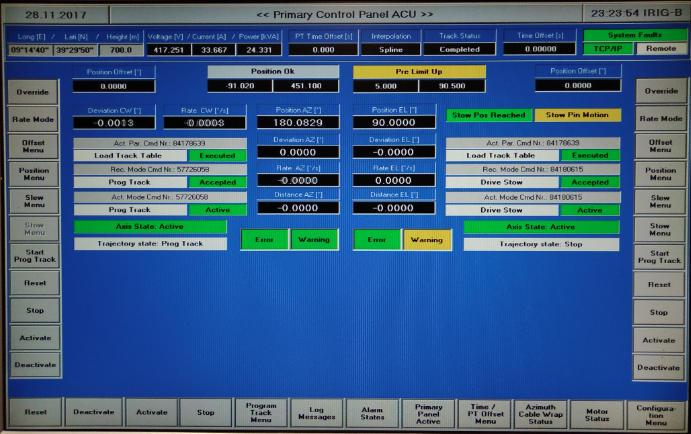
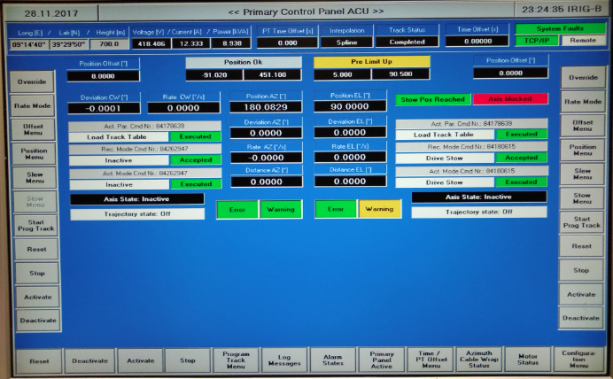
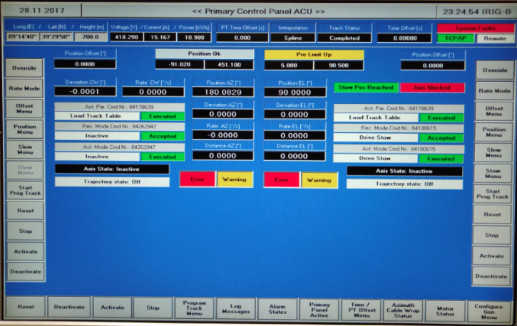
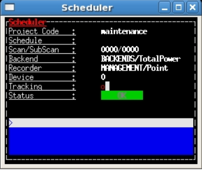
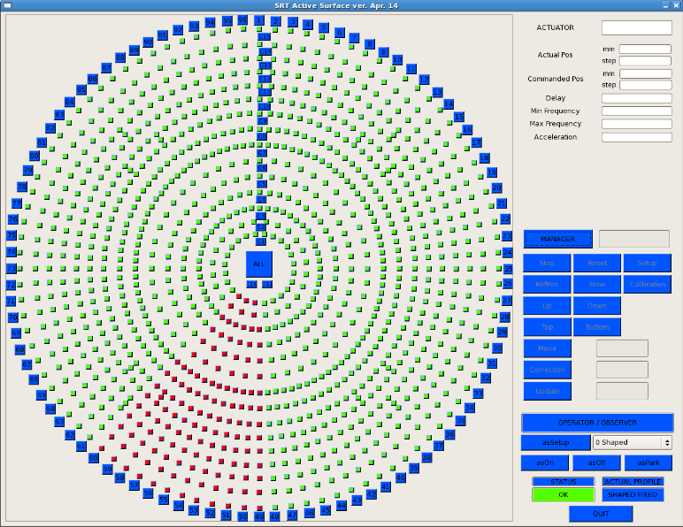
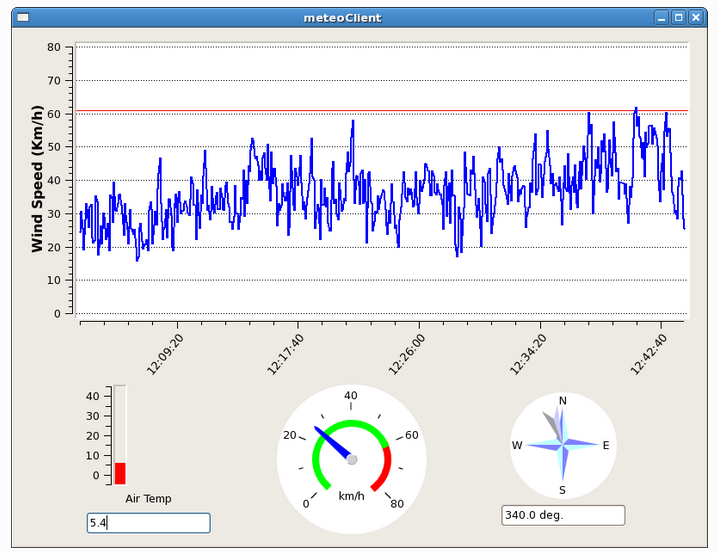

Primary Control Panel ACU¶
At the end of your observations, do not press the emergency stop button when the Stow Pin Motion is yellow as below.
Fig.17 ACU panel after
> antennaPark.
Wait until Axis blocked appears in red before pressing the emergency stop, as in the following figure:
Fig.18 ACU panel when the antenna is correctly parked.
When the emergency stop button is pressed, different messages are in red, as indicated in the following figure:
Fig.19 ACU panel when the emergency button is pressed.
AntennaBoss¶
Observatory¶
Mount¶

GenericBackend¶
ReceiversBoss¶
Scheduler¶
The antenna is not in tracking when the @ is red. Note that it can also be red when the antenna is in slewing (to reach the position of a target).
When the status of the scheduler is in FAILURE and the scan/subscan number is frozen, stop the schedule.
Fig.21 The scheduler status is in FAILURE (add image!)
MinorServo¶
Logging Display¶
Active Surface¶
- The active surface does not work properly if a large fraction (a whole
sector) becomes red. It is a problem in K-band observations.
Fig.22 A fraction of the active surface (red squares) does not work properly.
MeteoClient¶
The real-time monitoring of the wind velocity is performed with the
meteoClient on a nuraghe-mng shell: $ meteoClient. The red
horizontal line corresponds to 60 km/h, the limit for observing with
SRT.
Fig.23 The antenna is automatically stowed when the wind speed exceeds 60km/h.